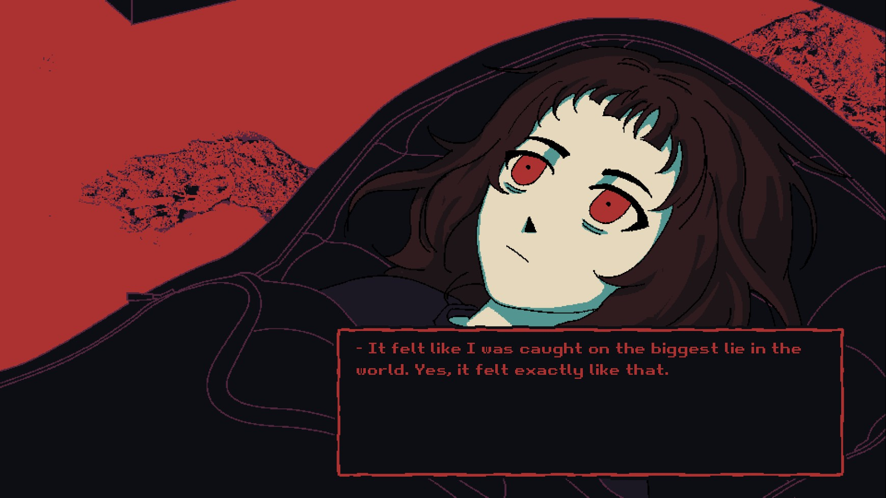
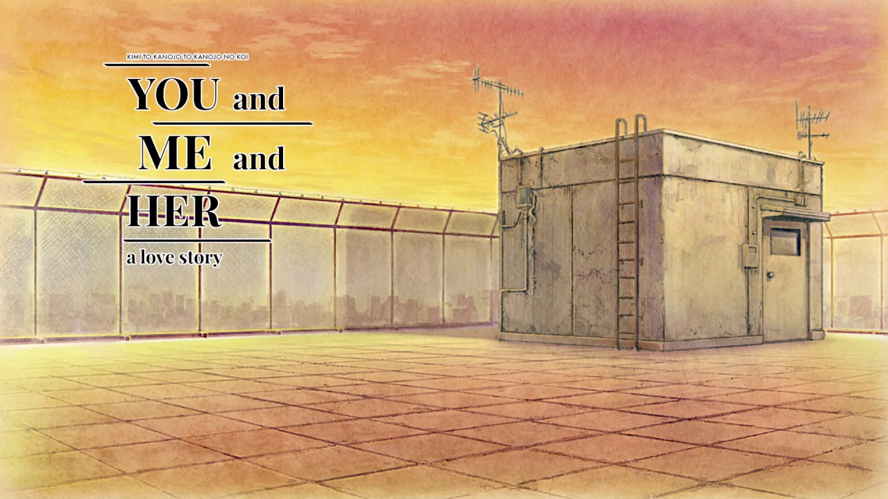
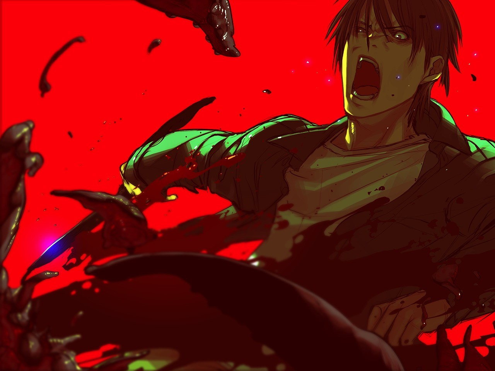

Сайт-проект об индустрии Визуальных Новелл
Визуальный стиль, фоны и дизайн персонажей — это важнейшая часть любой новеллы. Ниже представлены конкретные примеры культовых сцен и интерфейсов из популярных психологических хоррор-новелл:

Этот кадр отлично демонстрирует уникальный визуальный стиль игры. Нестандартная пиксельная графика в психоделических красно-черных тонах и оригинальный текстбокс помогают автору передать искаженное восприятие мира главной героини, погружая читателя в её мысли.

Крыша школы из новеллы «Ты, я и она: История любви» — это пример классического, но важного фонового пейзажа (бэкграунда). В этом жанре крыша часто становится местом ключевых диалогов и судьбоносных выборов игрока, которые полностью меняют сюжетную линию.

Кадр из культовой новеллы «Песнь Сайи» иллюстрирует работу художников над спрайтами персонажей. Этот кадр — чистая эссенция депрессивного жанра. Перед нами не героический бой, а кульминация безысходности, где ярость смешана с глубоким отчаянием. Утсуге не обещает хэппи-эндов: здесь герой разрушает остатки своей человечности ради иллюзорного спасения, оставляя читателя один на один с гнетущей пустотой.